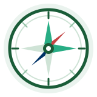
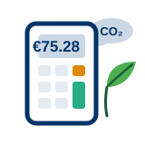
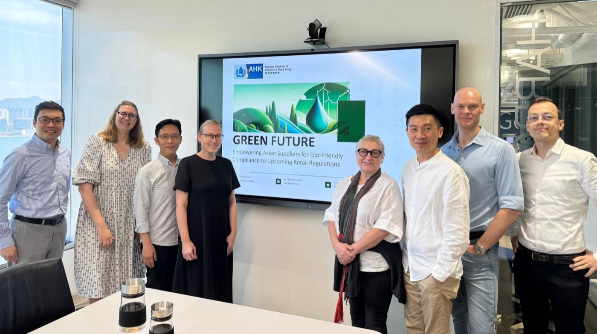
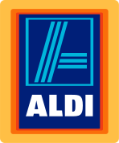
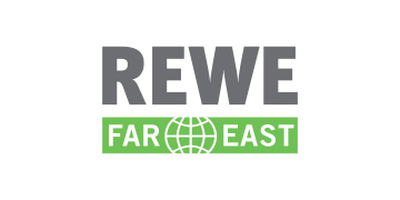
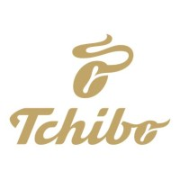
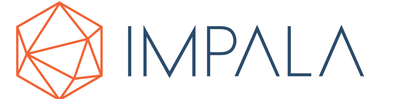
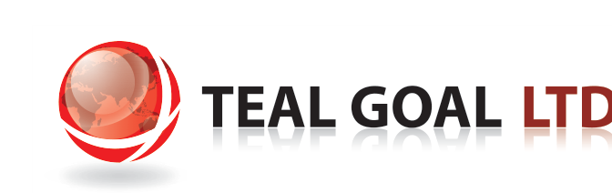
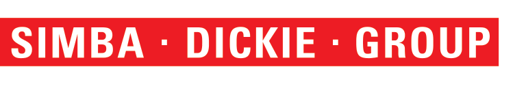
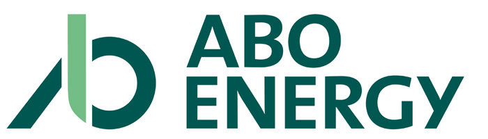

Free tools from the German Chamber of Commerce Hong Kong: check which regulations apply to your products, estimate your CBAM costs, and get regular updates — in English and Chinese.香港德国商会免费工具：查明适用于您产品的法规、估算CBAM成本、获取最新动态——中英双语。Kostenlose Tools der Deutschen Handelskammer Hongkong: Prüfen Sie, welche Vorschriften für Ihre Produkte gelten, schätzen Sie Ihre CBAM-Kosten und erhalten Sie regelmäßige Updates — auf Englisch und Chinesisch.Công cụ miễn phí từ Phòng Thương mại Đức tại Hồng Kông: kiểm tra quy định nào áp dụng cho sản phẩm của bạn, ước tính chi phí CBAM và nhận cập nhật thường xuyên — bằng tiếng Anh và tiếng Trung.
Pick the question that sounds like you — we'll take you to the answer.选择最符合您情况的问题——我们将直接带您找到答案。Wählen Sie die Frage, die auf Sie zutrifft — wir führen Sie direkt zur Antwort.Chọn câu hỏi phù hợp với bạn — chúng tôi sẽ đưa bạn đến câu trả lời.
Answer 3 quick questions and get your personal regulation list.回答3个简单问题，获取您的专属法规清单。Beantworten Sie 3 kurze Fragen und erhalten Sie Ihre persönliche Vorschriftenliste.Trả lời 3 câu hỏi nhanh và nhận danh sách quy định dành riêng cho bạn.
→Estimate your CBAM cost exposure and see if you are exempt.估算您的CBAM成本，查看是否可豁免。Schätzen Sie Ihre CBAM-Kosten und prüfen Sie, ob Sie befreit sind.Ước tính chi phí CBAM của bạn và xem bạn có được miễn trừ hay không.
→See every EU compliance date on the radar, sorted by urgency.按紧急程度查看所有欧盟合规日期。Alle EU-Compliance-Termine auf dem Radar, sortiert nach Dringlichkeit.Xem mọi thời hạn tuân thủ của EU trên radar, sắp xếp theo mức độ khẩn cấp.
→The news briefing: what happened, why it matters, what to do.新闻简报：发生了什么、为何重要、如何应对。Das News-Briefing: was geschehen ist, warum es wichtig ist, was zu tun ist.Bản tin: điều gì đã xảy ra, vì sao quan trọng, cần làm gì.
→Still not sure? Write to the Committee — we answer in English, Chinese and German.仍不确定？写信给委员会——我们提供英文、中文和德文解答。Noch unsicher? Schreiben Sie dem Ausschuss — wir antworten auf Englisch, Chinesisch und Deutsch.Vẫn chưa chắc chắn? Hãy viết thư cho Ủy ban — chúng tôi trả lời bằng tiếng Anh, tiếng Trung và tiếng Đức.

Select your product category and target markets to see applicable regulations.选择您的产品类别和目标市场，查看适用的法规。Wählen Sie Ihre Produktkategorie und Zielmärkte, um die geltenden Vorschriften zu sehen.Chọn danh mục sản phẩm và thị trường mục tiêu để xem các quy định áp dụng.
Enter the first 2–6 digits of your HS code. We'll identify the applicable product category.输入您的HS编码前2至6位，我们将自动识别适用的产品类别。Geben Sie die ersten 2–6 Stellen Ihres HS-Codes ein. Wir ermitteln die passende Produktkategorie.Nhập 2–6 chữ số đầu của mã HS. Chúng tôi sẽ xác định danh mục sản phẩm phù hợp.
Widely recognized frameworks that strengthen your compliance posture广泛认可的框架，增强您的合规能力Weithin anerkannte Rahmenwerke, die Ihre Compliance-Position stärkenCác khuôn khổ được công nhận rộng rãi giúp củng cố năng lực tuân thủ của bạn

What will the EU carbon border levy cost you? Estimate your exposure with the official Q2 2026 certificate price (€75.28/tCO₂e).欧盟碳边境税将让您付出多少成本？基于2026年第二季度官方证书价格（€75.28/tCO₂e）进行估算。Was kostet Sie die CO₂-Grenzabgabe der EU? Schätzen Sie Ihre Belastung mit dem offiziellen Zertifikatspreis für Q2 2026 (€75.28/tCO₂e).Thuế carbon biên giới của EU sẽ khiến bạn tốn bao nhiêu? Ước tính mức chi phí với giá chứng chỉ chính thức Q2 2026 (€75.28/tCO₂e).
CBAM applies to 6 sectors: Iron & Steel, Aluminium, Cement, Fertilisers, Electricity, and Hydrogen. The definitive regime began January 2026; importers below 50 tonnes/year (cumulative) are exempt. A proposed extension would add ~180 downstream steel/aluminium products (e.g. car parts, appliances) from 2028. If your product is not covered, you are not directly subject to CBAM — but your EU buyers' supply chain reporting obligations may still require your carbon data.CBAM适用于六个行业：铁和钢、铝、水泥、化肥、电力和氢气。最终机制已于2026年1月生效；每年累计进口量低于50公吨的进口商可获豁免。拟议的扩展方案将自2028年起新增约180种下游钢铝产品（如汽车零部件、家电）。若您的产品不在覆盖范围内，您暂不直接受CBAM约束，但您的欧盟买家的供应链报告义务仍可能需要您提供碳排放数据。CBAM gilt für 6 Sektoren: Eisen & Stahl, Aluminium, Zement, Düngemittel, Strom und Wasserstoff. Das endgültige Regime begann im Januar 2026; Importeure unter 50 Tonnen/Jahr (kumuliert) sind befreit. Eine vorgeschlagene Erweiterung würde ab 2028 rund 180 nachgelagerte Stahl-/Aluminiumprodukte (z. B. Autoteile, Haushaltsgeräte) hinzufügen. Ist Ihr Produkt nicht erfasst, unterliegen Sie CBAM nicht direkt — die Lieferketten-Berichtspflichten Ihrer EU-Käufer können jedoch weiterhin Ihre CO₂-Daten erfordern.CBAM áp dụng cho 6 lĩnh vực: Sắt & Thép, Nhôm, Xi măng, Phân bón, Điện và Hydro. Cơ chế chính thức bắt đầu từ tháng 1 năm 2026; nhà nhập khẩu dưới 50 tấn/năm (lũy kế) được miễn trừ. Một đề xuất mở rộng sẽ bổ sung khoảng 180 sản phẩm thép/nhôm hạ nguồn (ví dụ: phụ tùng ô tô, thiết bị gia dụng) từ năm 2028. Nếu sản phẩm của bạn không thuộc phạm vi áp dụng, bạn không trực tiếp chịu CBAM — nhưng nghĩa vụ báo cáo chuỗi cung ứng của các khách hàng EU vẫn có thể yêu cầu dữ liệu carbon của bạn.
Ensure uninterrupted access to EU and global markets by meeting evolving sustainability standards.合规使您的产品可销往欧盟及其他高标准市场Sichern Sie sich ununterbrochenen Zugang zu EU- und Weltmärkten, indem Sie die sich wandelnden Nachhaltigkeitsstandards erfüllen.Đảm bảo tiếp cận liên tục thị trường EU và toàn cầu bằng cách đáp ứng các tiêu chuẩn phát triển bền vững ngày càng cao.
Stay ahead of regulatory enforcement and avoid costly penalties through proactive compliance.避免高额罚款（最高可达营业额的3–4%）及产品召回Bleiben Sie der Regulierungsdurchsetzung voraus und vermeiden Sie teure Strafen durch proaktive Compliance.Đi trước các biện pháp thực thi pháp luật và tránh các khoản phạt tốn kém nhờ tuân thủ chủ động.
Differentiate your brand and attract sustainability-conscious customers and investors.成为欧洲零售商优先选择的合规供应商Differenzieren Sie Ihre Marke und gewinnen Sie nachhaltigkeitsbewusste Kunden und Investoren.Tạo sự khác biệt cho thương hiệu và thu hút khách hàng, nhà đầu tư quan tâm đến phát triển bền vững.
Understanding the cost of inaction and the value of compliance了解不作为的代价与合规的价值Die Kosten des Nichthandelns und der Wert der Compliance verstehenHiểu cái giá của việc không hành động và giá trị của việc tuân thủ
Fines, sanctions, and potential market bans for non-compliant products.罚款、制裁，以及不合规产品可能被禁止进入市场。Bußgelder, Sanktionen und mögliche Marktverbote für nicht konforme Produkte.Tiền phạt, chế tài và nguy cơ bị cấm lưu hành đối với sản phẩm không tuân thủ.
Increased operational expenses from last-minute compliance scrambles.临时合规导致运营成本大幅增加。Erhöhte Betriebskosten durch kurzfristige Compliance-Maßnahmen.Chi phí vận hành tăng do phải chạy đua tuân thủ vào phút chót.
Loss of customer trust and brand value due to greenwashing allegations.因"漂绿"指控导致客户信任和品牌价值流失。Verlust von Kundenvertrauen und Markenwert durch Greenwashing-Vorwürfe.Mất lòng tin của khách hàng và giá trị thương hiệu do các cáo buộc tẩy xanh (greenwashing).
Supply chain interruptions and inability to access key markets.供应链中断，无法进入关键市场。Unterbrechungen der Lieferkette und fehlender Zugang zu Schlüsselmärkten.Chuỗi cung ứng bị gián đoạn và không thể tiếp cận các thị trường trọng điểm.
Continued and expanded access to EU and international markets.持续并扩大进入欧盟和国际市场的渠道。Fortgesetzter und erweiterter Zugang zu EU- und internationalen Märkten.Duy trì và mở rộng khả năng tiếp cận thị trường EU và quốc tế.
Access to green financing, tax benefits, and sustainability-linked funds.获得绿色融资、税收优惠及可持续发展相关基金。Zugang zu grüner Finanzierung, Steuervorteilen und nachhaltigkeitsgebundenen Fonds.Tiếp cận tài chính xanh, ưu đãi thuế và các quỹ gắn với phát triển bền vững.
Enhanced credibility and preference among sustainability-conscious buyers.在注重可持续发展的买家中提升信誉和优先合作地位。Höhere Glaubwürdigkeit und Bevorzugung bei nachhaltigkeitsbewussten Käufern.Nâng cao uy tín và được ưu tiên bởi các khách hàng quan tâm đến phát triển bền vững.
Reduced waste, energy costs, and resource consumption over time.长期降低废料、能耗及资源消耗。Weniger Abfall, geringere Energiekosten und Ressourcenverbrauch im Zeitverlauf.Giảm chất thải, chi phí năng lượng và mức tiêu thụ tài nguyên theo thời gian.
Since 30 April 2026, major listed companies in China (SSE 180, STAR 50, SZSE 100 and ChiNext index constituents, plus dual-listed companies) must publish annual sustainability reports, with national CSDS standards rolling out to 2030. If you are listed on the Shanghai, Shenzhen or Beijing exchanges, you have parallel obligations at home. The GCC Sustainability Committee can help you navigate both EU and China ESG requirements.自2026年4月30日起，中国主要上市公司（上证180、科创50、深证100及创业板指数成分股，以及境内外同时上市的公司）须发布年度可持续发展报告，全国性CSDS准则将于2030年前逐步推行。若您在沪、深、北交所上市，您同时面临两个市场的合规义务。德国商会可持续发展委员会可协助您同时满足欧盟及中国ESG要求。Seit dem 30. April 2026 müssen große börsennotierte Unternehmen in China (Indexwerte von SSE 180, STAR 50, SZSE 100 und ChiNext sowie doppelt notierte Unternehmen) jährliche Nachhaltigkeitsberichte veröffentlichen; die nationalen CSDS-Standards werden bis 2030 schrittweise eingeführt. Sind Sie an den Börsen Shanghai, Shenzhen oder Peking notiert, haben Sie parallele Pflichten im Heimatmarkt. Der GCC-Nachhaltigkeitsausschuss unterstützt Sie bei den ESG-Anforderungen der EU und Chinas.Kể từ ngày 30 tháng 4 năm 2026, các công ty niêm yết lớn tại Trung Quốc (thành phần các chỉ số SSE 180, STAR 50, SZSE 100 và ChiNext, cùng các công ty niêm yết kép) phải công bố báo cáo phát triển bền vững hàng năm, với các chuẩn mực CSDS quốc gia được triển khai đến năm 2030. Nếu công ty của bạn niêm yết tại Thượng Hải, Thâm Quyến hoặc Bắc Kinh, bạn có các nghĩa vụ song song tại thị trường trong nước. Ủy ban Phát triển Bền vững GCC có thể giúp bạn đáp ứng cả yêu cầu ESG của EU và Trung Quốc.
Contact the Committee →联系委员会了解更多 →Ausschuss kontaktieren →Liên hệ Ủy ban →A framework for sustainable compliance success实现可持续合规的行动框架Ein Rahmen für nachhaltigen Compliance-ErfolgKhuôn khổ cho thành công trong tuân thủ bền vững
Build transparent supply chains with verified sustainable sourcing, clear traceability, and ethical partnerships that meet regulatory requirements.建立透明的供应链，确保经验证的可持续采购、清晰的可追溯性以及符合监管要求的合规合作伙伴关系。Bauen Sie transparente Lieferketten mit verifizierter nachhaltiger Beschaffung, klarer Rückverfolgbarkeit und ethischen Partnerschaften auf, die die regulatorischen Anforderungen erfüllen.Xây dựng chuỗi cung ứng minh bạch với nguồn cung bền vững đã được xác minh, khả năng truy xuất rõ ràng và các quan hệ đối tác có đạo đức, đáp ứng yêu cầu pháp lý.
Leverage digital tools and data analytics to monitor compliance, automate reporting, and provide real-time visibility into sustainability metrics.利用数字工具和数据分析监控合规状态，自动化报告流程，实时掌握可持续发展指标。Nutzen Sie digitale Tools und Datenanalysen, um Compliance zu überwachen, Berichte zu automatisieren und Nachhaltigkeitskennzahlen in Echtzeit sichtbar zu machen.Tận dụng công cụ số và phân tích dữ liệu để giám sát tuân thủ, tự động hóa báo cáo và theo dõi các chỉ số phát triển bền vững theo thời gian thực.
Design products with circularity in mind, embrace eco-innovation, and adapt quickly to evolving market demands and regulatory shifts.以循环经济理念设计产品，拥抱绿色创新，快速适应不断变化的市场需求和监管趋势。Entwickeln Sie Produkte im Sinne der Kreislaufwirtschaft, setzen Sie auf Öko-Innovation und passen Sie sich schnell an veränderte Marktanforderungen und regulatorische Entwicklungen an.Thiết kế sản phẩm theo hướng tuần hoàn, đón nhận đổi mới sinh thái và thích ứng nhanh với nhu cầu thị trường và thay đổi quy định.
The official sustainability body of the German Chamber of Commerce, Hong Kong香港德国商会官方可持续发展机构Das offizielle Nachhaltigkeitsgremium der Deutschen Handelskammer HongkongCơ quan chính thức về phát triển bền vững của Phòng Thương mại Đức tại Hồng Kông

We are the official Sustainability Committee of the German Chamber of Commerce, Hong Kong — sourcing offices of major German and European retail organizations and their partners. As new sustainability regulations reshape trade between Europe and Asia, we understand the challenges suppliers face and support your journey towards compliance and growth.我们是香港德国商会官方可持续发展委员会——由主要德国及欧洲零售企业的采购办公室及其合作伙伴组成。随着新的可持续发展法规重塑欧亚贸易，我们深知供应商面临的挑战，并支持您走向合规与增长。Wir sind der offizielle Nachhaltigkeitsausschuss der Deutschen Handelskammer Hongkong — Einkaufsbüros führender deutscher und europäischer Handelsorganisationen und ihre Partner. Während neue Nachhaltigkeitsvorschriften den Handel zwischen Europa und Asien neu ordnen, verstehen wir die Herausforderungen der Lieferanten und begleiten Sie auf Ihrem Weg zu Compliance und Wachstum.Chúng tôi là Ủy ban Phát triển Bền vững của Phòng Thương mại Đức tại Hồng Kông chính thức — gồm các văn phòng thu mua của các tập đoàn bán lẻ lớn của Đức và châu Âu cùng các đối tác. Khi các quy định phát triển bền vững mới đang định hình lại thương mại giữa châu Âu và châu Á, chúng tôi thấu hiểu những thách thức mà nhà cung cấp phải đối mặt và đồng hành cùng bạn trên hành trình tuân thủ và tăng trưởng.
We provide practical guidance: this platform's free tools, regular regulatory briefings, workshops and trainings, and a direct line to compliance experts — in English, Chinese and German.我们提供切实可行的指导：本平台的免费工具、定期法规简报、研讨会和培训，以及直接对接合规专家的渠道——提供英文、中文和德文服务。Wir bieten praxisnahe Orientierung: die kostenlosen Tools dieser Plattform, regelmäßige Regulierungs-Briefings, Workshops und Schulungen sowie einen direkten Draht zu Compliance-Experten — auf Englisch, Chinesisch und Deutsch.Chúng tôi cung cấp hướng dẫn thiết thực: các công cụ miễn phí của nền tảng này, bản tin quy định định kỳ, hội thảo và đào tạo, cùng kênh liên hệ trực tiếp với các chuyên gia tuân thủ — bằng tiếng Anh, tiếng Trung và tiếng Đức.
Join the Committee加入委员会Dem Ausschuss beitretenTham gia Ủy ban






Common questions about sustainability compliance关于可持续发展合规的常见问题Häufige Fragen zur Nachhaltigkeits-ComplianceCác câu hỏi thường gặp về tuân thủ phát triển bền vững
Various EU and national funding programs support companies in their sustainability transition. These include grants for green technology adoption, subsidized consulting services, tax incentives for sustainable investments, and access to green finance instruments. The GCC Sustainability Committee can help identify relevant programs for your business.欧盟和各国政府提供多种资金支持计划，包括绿色技术采纳补贴、咨询服务补助、可持续投资税收优惠，以及绿色金融工具。德国商会可持续发展委员会可协助您识别适用的支持项目。Verschiedene EU- und nationale Förderprogramme unterstützen Unternehmen bei ihrer Nachhaltigkeitstransformation. Dazu gehören Zuschüsse für grüne Technologien, geförderte Beratungsleistungen, Steueranreize für nachhaltige Investitionen und Zugang zu grünen Finanzierungsinstrumenten. Der GCC-Nachhaltigkeitsausschuss hilft Ihnen, relevante Programme für Ihr Unternehmen zu identifizieren.Nhiều chương trình tài trợ của EU và các quốc gia hỗ trợ doanh nghiệp trong quá trình chuyển đổi phát triển bền vững, bao gồm trợ cấp áp dụng công nghệ xanh, dịch vụ tư vấn được trợ giá, ưu đãi thuế cho đầu tư bền vững và tiếp cận các công cụ tài chính xanh. Ủy ban Phát triển Bền vững GCC có thể giúp bạn xác định các chương trình phù hợp với doanh nghiệp.
Yes, most EU regulations include transition periods to allow companies time to adapt. These typically range from 12 to 36 months after publication. However, early preparation is strongly recommended as compliance requirements can be complex and implementation takes time. Phased enforcement often applies based on company size.是的，大多数欧盟法规设有过渡期，通常为公布后12至36个月。但强烈建议提前准备，因为合规要求复杂，实施需要时间。分阶段执法通常按公司规模实施。Ja, die meisten EU-Vorschriften sehen Übergangsfristen vor, damit Unternehmen Zeit zur Anpassung haben. Diese betragen in der Regel 12 bis 36 Monate nach Veröffentlichung. Eine frühzeitige Vorbereitung wird jedoch dringend empfohlen, da Compliance-Anforderungen komplex sein können und die Umsetzung Zeit braucht. Die gestaffelte Durchsetzung richtet sich häufig nach der Unternehmensgröße.Có, hầu hết các quy định của EU đều có thời gian chuyển tiếp để doanh nghiệp thích ứng, thường từ 12 đến 36 tháng sau khi ban hành. Tuy nhiên, doanh nghiệp nên chuẩn bị sớm vì các yêu cầu tuân thủ có thể phức tạp và việc triển khai cần thời gian. Việc thực thi theo giai đoạn thường dựa trên quy mô công ty.
EU Regulations apply uniformly across all member states. However, EU Directives require transposition into national law, which can lead to variations in implementation timelines and specific requirements. Companies operating across multiple markets should monitor both EU-level and national-level requirements.欧盟条例（Regulation）在所有成员国统一适用。但欧盟指令（Directive）需转化为国内法，可能导致实施时间和具体要求存在差异。跨市场经营的企业应同时关注欧盟层面和国家层面的要求。EU-Verordnungen gelten einheitlich in allen Mitgliedstaaten. EU-Richtlinien müssen jedoch in nationales Recht umgesetzt werden, was zu Unterschieden bei Zeitplänen und konkreten Anforderungen führen kann. Unternehmen, die in mehreren Märkten tätig sind, sollten sowohl die EU-weiten als auch die nationalen Anforderungen beobachten.Các Quy định (Regulation) của EU áp dụng thống nhất tại tất cả các quốc gia thành viên. Tuy nhiên, các Chỉ thị (Directive) của EU phải được chuyển hóa vào luật quốc gia, có thể dẫn đến khác biệt về lộ trình triển khai và yêu cầu cụ thể. Doanh nghiệp hoạt động tại nhiều thị trường nên theo dõi yêu cầu ở cả cấp EU và cấp quốc gia.
Official regulatory texts are available on EUR-Lex (the official EU law database). For practical guidance, the European Commission publishes implementation guides and FAQs. The GCC Sustainability Committee also provides tailored briefings and can connect you with regulatory experts.官方法规文本可在EUR-Lex（欧盟官方法律数据库）上查阅。欧盟委员会发布实施指南和FAQ供参考。德国商会可持续发展委员会也提供定制简报，并可为您对接监管专家。Die offiziellen Rechtstexte finden Sie auf EUR-Lex (der offiziellen EU-Rechtsdatenbank). Für die Praxis veröffentlicht die Europäische Kommission Umsetzungsleitfäden und FAQs. Der GCC-Nachhaltigkeitsausschuss bietet zudem maßgeschneiderte Briefings und vermittelt Kontakte zu Regulierungsexperten.Văn bản pháp quy chính thức có trên EUR-Lex (cơ sở dữ liệu luật chính thức của EU). Về hướng dẫn thực tiễn, Ủy ban châu Âu công bố các tài liệu hướng dẫn triển khai và FAQ. Ủy ban Phát triển Bền vững GCC cũng cung cấp các bản tin chuyên sâu và có thể kết nối bạn với các chuyên gia pháp quy.
Required certifications vary by regulation and industry. Common frameworks include ISO 14001 (Environmental Management), ISO 50001 (Energy Management), and product-specific certifications like CE marking. Some regulations require third-party verification of sustainability reports. Contact us for guidance specific to your sector.所需认证因法规和行业而异。常见框架包括ISO 14001（环境管理）、ISO 50001（能源管理）以及CE标志等产品认证。部分法规要求第三方验证可持续发展报告。请联系我们获取针对您行业的指导。Die erforderlichen Zertifizierungen variieren je nach Vorschrift und Branche. Gängige Rahmenwerke sind ISO 14001 (Umweltmanagement), ISO 50001 (Energiemanagement) sowie produktspezifische Zertifizierungen wie die CE-Kennzeichnung. Einige Vorschriften verlangen eine unabhängige Prüfung von Nachhaltigkeitsberichten. Kontaktieren Sie uns für branchenspezifische Beratung.Các chứng nhận cần thiết khác nhau tùy theo quy định và ngành hàng. Các khuôn khổ phổ biến gồm ISO 14001 (Quản lý môi trường), ISO 50001 (Quản lý năng lượng) và các chứng nhận theo sản phẩm như dấu CE. Một số quy định yêu cầu thẩm định độc lập báo cáo phát triển bền vững. Hãy liên hệ với chúng tôi để được tư vấn theo ngành của bạn.
Curated by the GCC Sustainability Committee. Regulation data is reviewed quarterly and sourced directly from EUR-Lex, the official EU law database.本工具由香港德国商会可持续发展委员会策划整理。所有法规条目均链接至EUR-Lex官方来源，每季度更新一次。Kuratiert vom GCC-Nachhaltigkeitsausschuss. Die Vorschriftendaten werden vierteljährlich überprüft und stammen direkt aus EUR-Lex, der offiziellen EU-Rechtsdatenbank.Được biên soạn bởi Ủy ban Phát triển Bền vững GCC. Dữ liệu quy định được rà soát hàng quý và lấy trực tiếp từ EUR-Lex, cơ sở dữ liệu luật chính thức của EU.
Disclaimer: The Green Sourcing Compass is informational. It surfaces the regulations most likely to apply so you start in the right place, not the final word on conformity. For binding compliance assessment, work with your testing lab, certification institute, or the GCC Sustainability Committee.免责声明：本工具仅供参考。它帮助您缩小适用法规的范围，不构成最终合规认定。如需具体合规评估，请咨询您的检测机构或德国商会可持续发展委员会。Haftungsausschluss: Der Green Sourcing Compass dient der Information. Er zeigt die Vorschriften, die am wahrscheinlichsten gelten, damit Sie an der richtigen Stelle beginnen; er ist keine abschließende Konformitätsaussage. Für eine verbindliche Compliance-Bewertung wenden Sie sich an Ihr Prüflabor, Ihr Zertifizierungsinstitut oder den GCC-Nachhaltigkeitsausschuss.Tuyên bố miễn trừ trách nhiệm: Green Sourcing Compass chỉ mang tính thông tin. Công cụ này chỉ ra các quy định có khả năng áp dụng cao nhất để bạn bắt đầu đúng hướng, không phải là kết luận cuối cùng về tính hợp chuẩn. Để được đánh giá tuân thủ có tính ràng buộc, hãy làm việc với phòng thử nghiệm, tổ chức chứng nhận của bạn hoặc Ủy ban Phát triển Bền vững GCC.